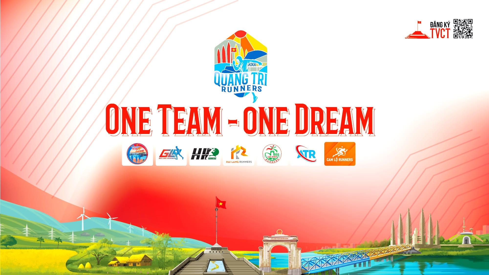

Câu lạc bộ chạy bộ Quảng Trị Runners
QTR (Quảng Trị Runners) là cộng đồng những người yêu thích chạy bộ tại Quảng Trị. Chúng tôi thành lập nhằm lan tỏa tinh thần thể thao, rèn luyện sức khỏe và gắn kết mọi người qua từng bước chạy.
Ứng dụng QTR Challenge được phát triển như một nền tảng hỗ trợ các thành viên tham gia thử thách, ghi nhận kết quả và kết nối cộng đồng chạy bộ.
Tổ chức các giải chạy bộ, từ phong trào đến bán chuyên, giúp hội viên nâng cao tinh thần và thể lực.
Ứng dụng QTR Challenge mang đến các thử thách hàng tuần, hàng tháng để mọi người cùng tham gia.
Kết nối runner Quảng Trị và bạn bè khắp nơi, chia sẻ hành trình rèn luyện và truyền cảm hứng.
Ghi nhận thành tích, theo dõi tiến bộ và cùng nhau chinh phục những cột mốc mới.